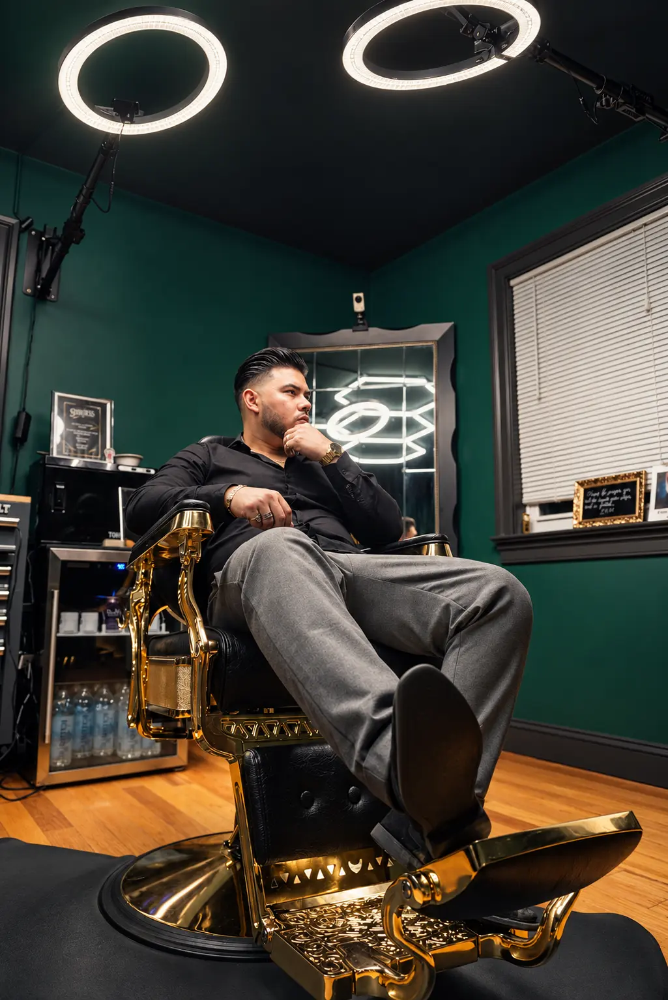
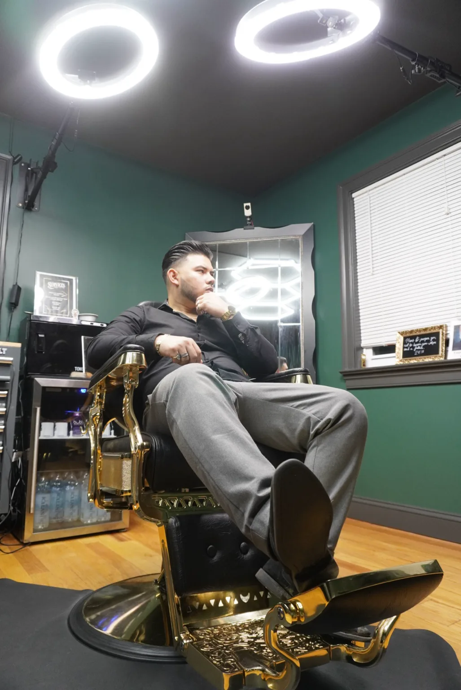
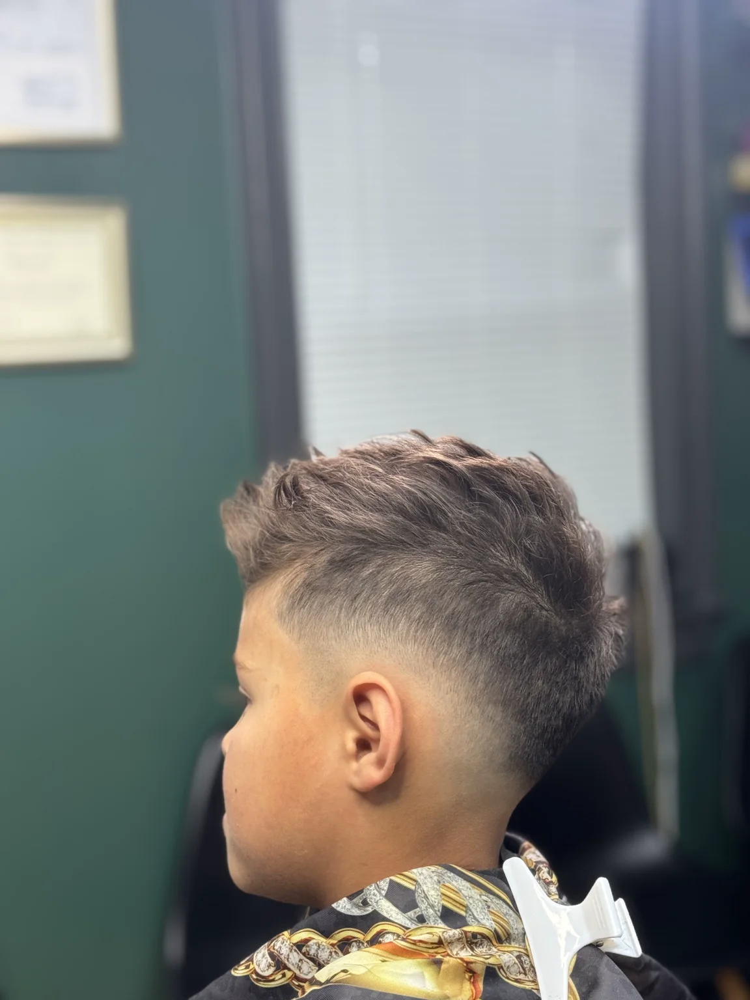
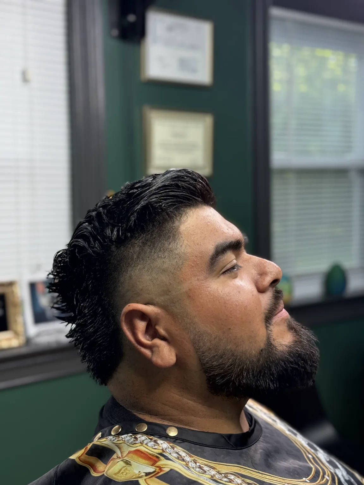
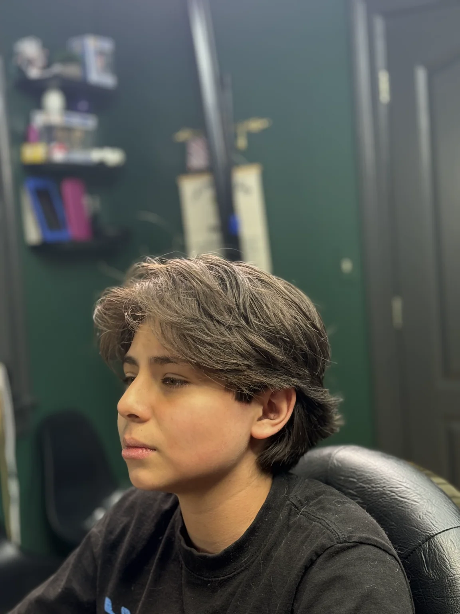
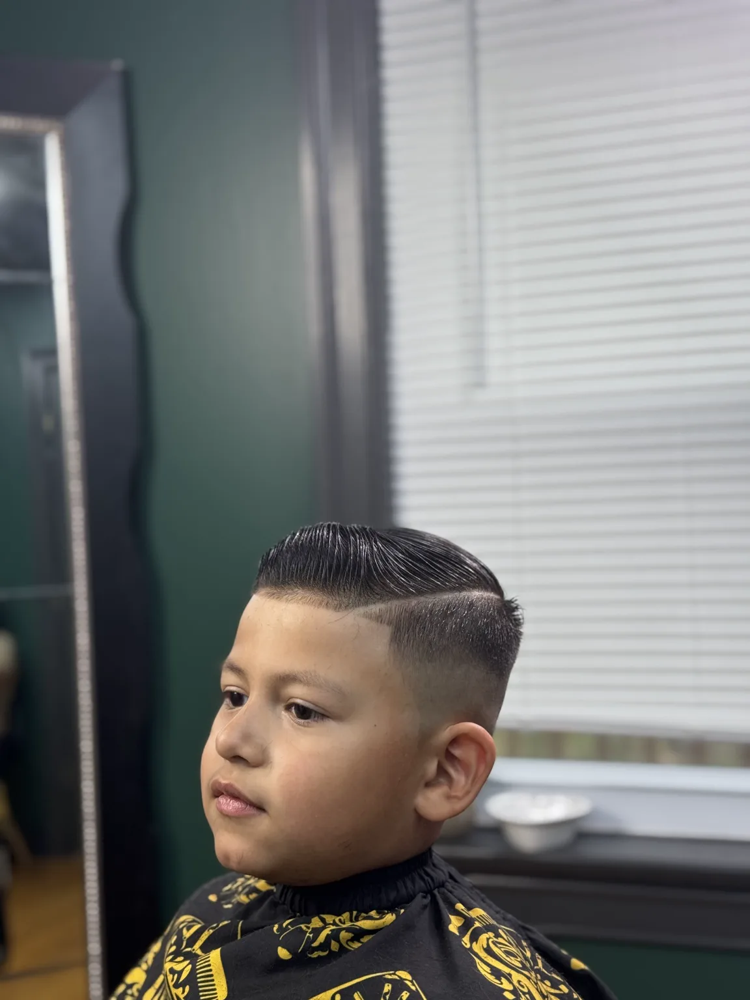
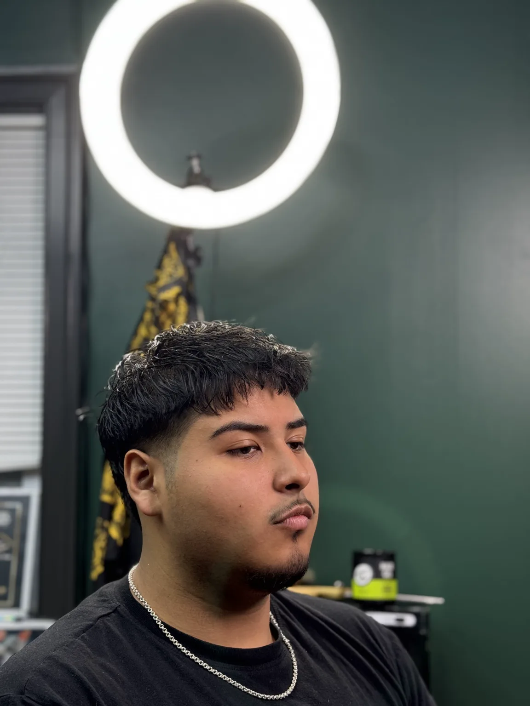
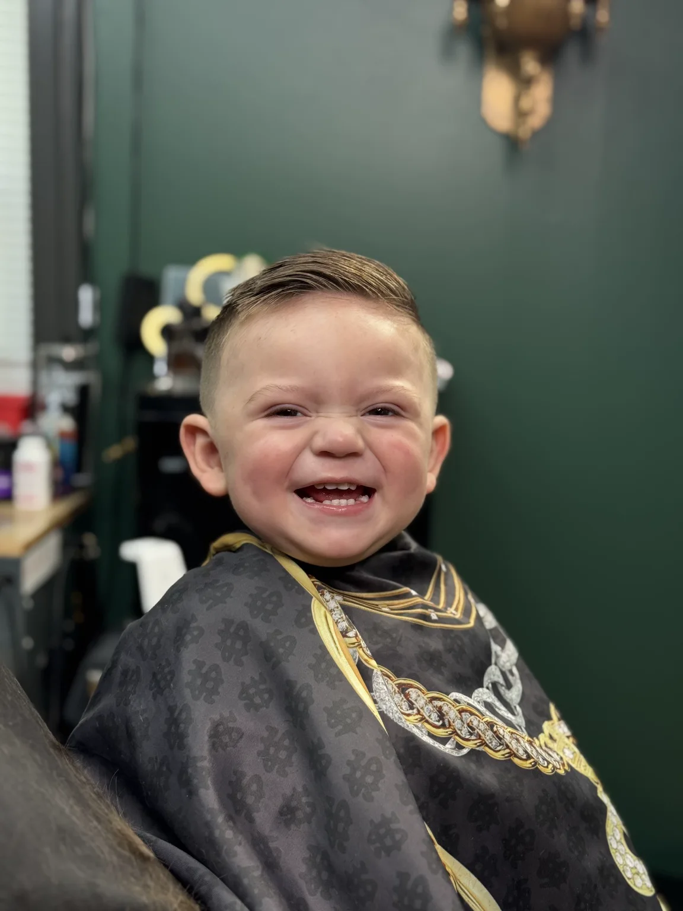
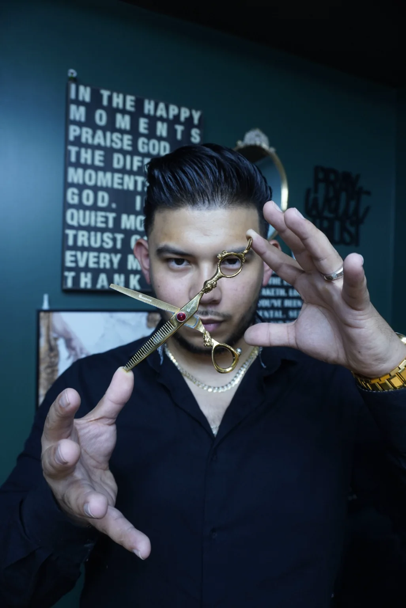

The beginning
My family gave me both a dependable profession and a foundation of faith before I fully understood the gifts they were placing in my life.
Owings Mills · Private Studio
Fades Place is more than a haircut. It is a space shaped by a father’s wisdom, strengthened through every season by God, and built to make every person feel welcomed, valued, and cared for.
My story
Where it began
I started cutting hair at thirteen, but the journey was shaped by more than one person. My father introduced me to the craft and taught me how to cut hair. My stepfather also played an important role, motivating me to take the skill seriously—not only as something I enjoyed, but as a profession that could help me earn an income and provide for myself whenever necessary. Beyond barbering, his guidance and influence helped shape the man I have become.
My mother’s influence has been just as meaningful. She strengthened the foundation of my faith, encouraged me to draw closer to the Lord, and taught me to seek God’s wisdom when making important decisions.
At the time, I believed my parents were simply helping me develop a backup plan. Looking back, I realize they were giving me something far greater: a gift I could grow in, take pride in, and use to serve others. I thank God for placing each of them in my life and for using their individual influence to help shape the person I am today.
Barbering became more than a profession when I realized how much trust someone places in my hands when they sit in my chair. A haircut may seem like a small part of someone’s day, but the confidence and feeling they leave with can stay with them long after the appointment. That trust is something I value, and it is a responsibility I never take lightly.
My family gave me both a dependable profession and a foundation of faith before I fully understood the gifts they were placing in my life.
Every client deserves my full attention, patience, and care—without the pressure of someone waiting behind them.
I never want to stop learning because I believe I have already done enough. Excellence requires humility.

Trust behind the chair
The cut may be finished to my eye. The experience is complete when the client feels heard.
The difficult moments have taught me just as much as the good ones. I have worked with clients who saw a detail differently than I did or wanted one more adjustment when I believed the cut was finished. Those experiences taught me to listen closely, remain patient, and hold my work to a higher standard. They taught me to stay humble and continue learning.
The work
Different ages, textures, styles, and details—each service receives the same careful attention and respect.






What luxury means here
To me, luxury means being genuinely cared for. It is found in a clean and peaceful environment, close attention to detail, and the freedom to relax because you trust the person serving you.
Fades Place is intentionally private. Your appointment is your time—time to be heard, to feel comfortable, and to receive a service built around the result you pictured.
Feel welcomed from the first conversation.
Feel heard, valued, comfortable, and never rushed.
Leave confident, refreshed, and grateful you came.

Faith at the center
My faith is at the center of the way I approach my work and the way I treat people. Through every season of my life—the victories, the challenges, and the moments that tested my character—God has guided me, strengthened me, and shaped me into the person I am today.
He has taught me to serve others righteously, with humility, honesty, patience, and excellence. I do not serve simply because I have to; I serve because it is genuinely in my heart to do so.
I believe every gift God gives us carries a purpose, and barbering has become one of the ways I can use my gift to care for others and make a positive difference in their lives.
“As each has received a gift, use it to serve one another.”
— 1 Peter 4:10
The vision ahead
My hope is for Fades Place to grow into a space where skilled professionals can come together, encourage one another, and take pride in their craft. I want to build a culture rooted in faith, respect, mentorship, excellence, and continuous growth—a place where someone just starting out can receive the kind of guidance my father once gave me.
If this becomes my legacy, I hope people remember more than the haircuts. I hope they remember how they were treated, how they felt when they sat in my chair, and that they always felt welcomed, valued, and cared for at Fades Place.
Your time. Your chair. Your experience.
Appointments are personally arranged through Instagram DM so we can communicate directly about the service you are looking for before your visit.
Message @fadesplace Private studio · Owings Mills, Maryland